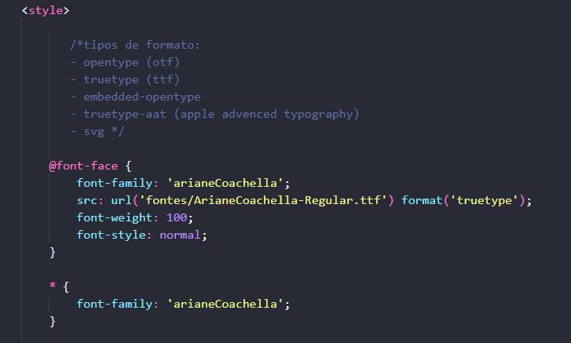

Outro site que tem diversas fontes gratuitas é o 'dafont'.
Abra o site, escolha a fonte que desejar e baixe.
O formato baixado estará zipado. Extraia em um arquivo em uma pasta de mesmo nome e a arraste todos os arquivos para a pasta do site.
Na pasta do site, crie uma pasta escrita "fontes" e insira todas as fontes externas baixadas, para que fique fora do html e não deixe tão poluído.
Dentro de style coloque as seguintes informações, alterando conforme a fonte escolhida:
Determine o nome da fonte da forma como desejar para "chamá-la" futuramente dentro de cada seletor. Na url coloque exatamente o nome que está salvo e insira 'fontes/' no começo.